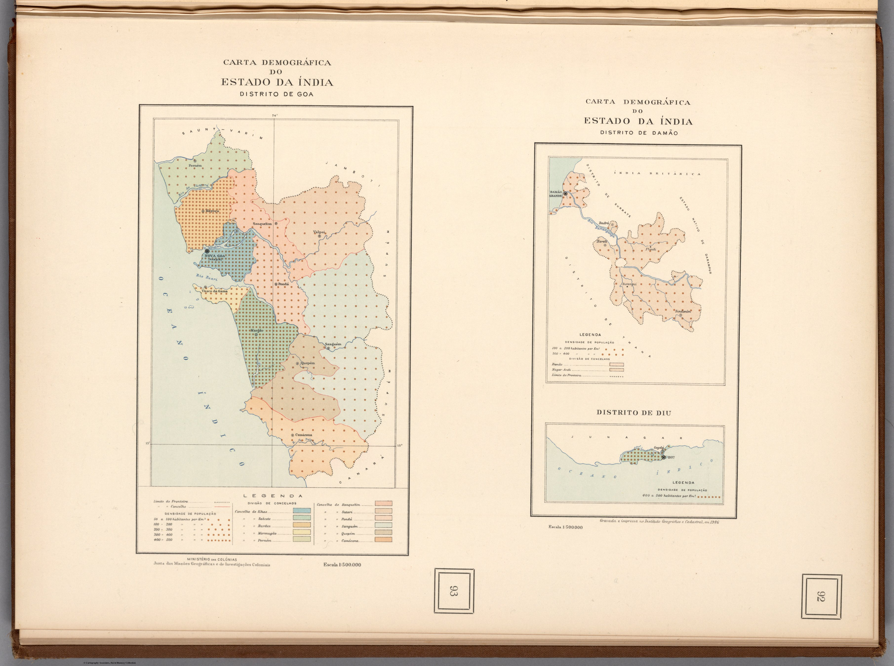

Click to enlargeThree demographic maps of Goa, Daman and Diu — the last Portuguese enclaves in India — from the official Atlas of Overseas Portugal. The four-century European gaze closes where it began, with Portugal, the once-vast claim now reduced to a few coastal districts on the eve of decolonisation.
Authorship and object
From the Atlas de Portugal Ultramarino e das Grandes Viagens Portuguesas de Descobrimento e Expansão, produced by Portugal's Ministério das Colónias and engraved at the Instituto Geográfico e Cadastral in Lisbon (maps dated 1946; atlas 1947–48). Three demographic sheets of the districts of the Estado da Índia — Goa, Damão and Diu — at about 1:500,000, showing population alongside boundaries, towns and physical features.
The colonial state's self-portrait
The atlas was an intellectual production of the Portuguese colonial research apparatus — a systematic cartographic portrait of "overseas Portugal" celebrating the voyages of discovery and the empire they had founded. These sheets map the surviving Portuguese India by its population and administration: the modern state's analytic gaze, the same census-and-boundary logic seen throughout this collection, turned on three small enclaves.
The gaze
This is the European gaze on India in its final form, and its closing symmetry. The collection opened in 1519 with a Portuguese royal atlas claiming the whole Indian Ocean in gold; it ends in 1946 with the Portuguese state tabulating the demographics of what remained — Goa, Daman and Diu, the last specks of a once-immense European claim. Within a year India would be independent; within fifteen, these enclaves too would be gone. The eye that drew India for four centuries closes here, on a few coastal dots and the memory of the voyages that began it.